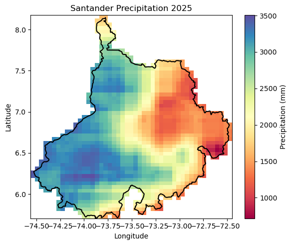
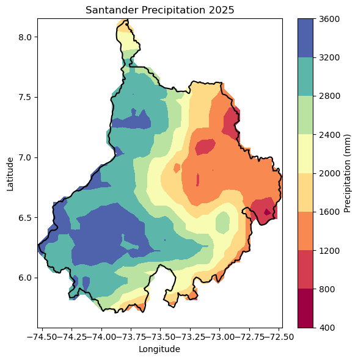
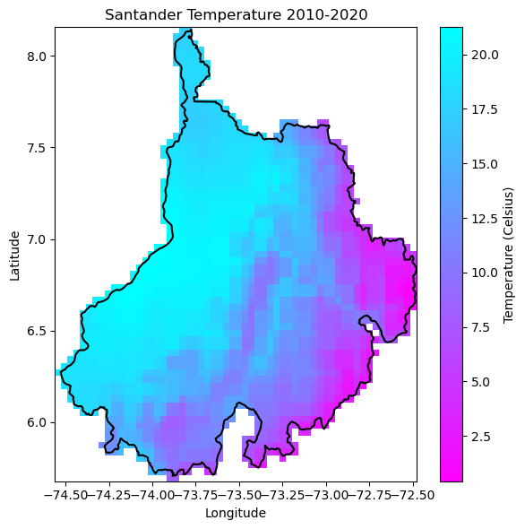
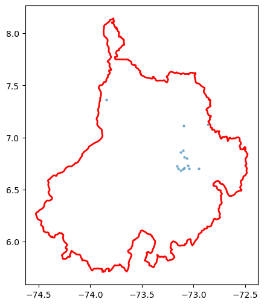
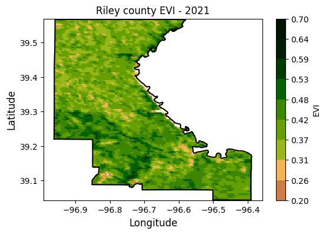
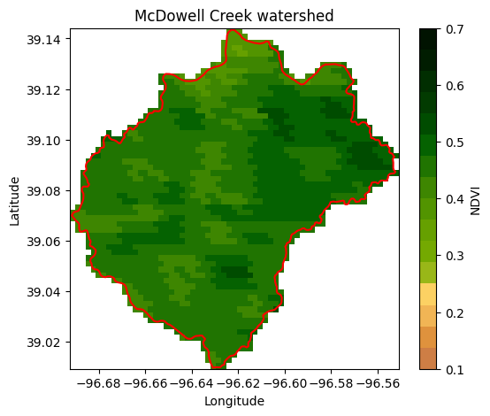
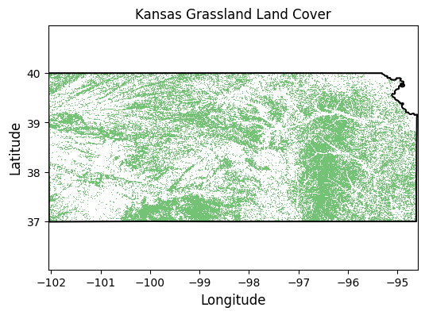

# Import modules
import ee
import numpy as np
import pandas as pd
import geopandas as gpd
import requests
import xarray as xr
import matplotlib.pyplot as plt
from matplotlib import colors, colormaps7 Reduce collection to image
Keywords
gee, image, reducers, mean, median
Often times we are interested in summarizing a collection of images into a single image. Reducers in Google Earth Engine (GEE) are functions that aggregate data, enabling the computation of summary metrics over images, image collections, or features. Reducers can summarize data spatially, temporally, or across bands, making them powerful tools for analyzing and synthesizing large geospatial datasets.
# Trigger the authentication flow.
#ee.Authenticate(auth_mode='localhost')
# Initialize the library.
#ee.Initialize(project='ee-ializarazos')Define helper functions
Save images to local drive
# Define function to save images to the local drive
def save_geotiff(ee_image, filename, crs, scale, geom, bands=[]):
"""
Function to save images from GEE into local hard drive.
"""
image_url = ee_image.getDownloadUrl({'region': geom,'scale':scale,
'bands': bands,
'crs': f'EPSG:{crs}',
'format': 'GEO_TIFF',
'formatOptions': {'cloudOptimized': True,
'noDataValue': 0}})
# Request data using URL and save data as a new GeoTiff file
response = requests.get(image_url)
with open(filename, 'wb') as f:
f.write(response.content)
return print('Saved image')Save features to local drive
def save_table(ee_feature_collection, filename):
"""
Save an Earth Engine FeatureCollection to a local GeoJSON or CSV file.
"""
# ee_feature_collection must be a FeatureCollection
url = ee_feature_collection.getDownloadURL(
filetype='geojson', # or 'csv'
filename='stder_sismos25' # name on the server side; extension is added automatically
)
r = requests.get(url)
r.raise_for_status()
with open(filename, 'wb') as f:
f.write(r.content)
print(f"Saved table to {filename}")The GAUL Dataset
The Global Administrative Unit Layers (GAUL) dataset is developed and owned by the Food and Agriculture Organization of the United Nations (FAO). It provides a comprehensive spatial dataset of sub-national administrative units for all countries in the world, consistent with the United Nations (UN) delineation of international boundaries.
The GAUL dataset comprises different administrative levels:
- Level 0: Country boundaries
- Level 1: First-level administrative units (e.g., states, provinces)
- Level 2: Second-level administrative units (e.g., districts, counties)
Level 1 boundaries are readily available in Google Earth Engine.
## Load the GAUL Level 1 dataset
level1 = ee.FeatureCollection("projects/sat-io/open-datasets/FAO/GAUL/GAUL_2024_L1");
print('GAUL Level 1 collection', level1)GAUL Level 1 collection ee.FeatureCollection({
"functionInvocationValue": {
"functionName": "Collection.loadTable",
"arguments": {
"tableId": {
"constantValue": "projects/sat-io/open-datasets/FAO/GAUL/GAUL_2024_L1"
}
}
}
})# Aggregate all unique names from the 'ADM0_NAME' property into a list
# The .distinct() call ensures only unique names are collected, avoiding duplicates
# for territories that might have separate entries (e.g., 'Portugal' and 'Madeira Islands').
country_names_list_gee = level1.distinct("gaul0_name").aggregate_array("gaul0_name")
# Sort the list using GEE's ee.List.sort() method
sorted_country_names_gee = country_names_list_gee.sort()
# Use .getInfo() to transfer the list from the GEE server to your local Python environment
country_names = sorted_country_names_gee.getInfo()country_names['Abyei',
'Afghanistan',
'Akrotiri',
'Aksai Chin',
'Albania',
'Algeria',
'American Samoa',
'Andorra',
'Angola',
'Anguilla',
'Antarctica',
'Antigua And Barbuda',
'Argentina',
'Armenia',
'Aruba',
'Arunachal Pradesh',
'Ascension, Saint Helena and Tristan da Cunha',
'Ashmore and Cartier Islands',
'Australia',
'Austria',
'Azerbaijan',
'Bahamas',
'Bahrain',
'Bangladesh',
'Barbados',
'Bassas Da India',
'Belarus',
'Belgium',
'Belize',
'Benin',
'Bermuda',
'Bhutan',
'Bolivia (Plurinational State of)',
'Bonaire, Sint Eustatius And Saba',
'Bosnia and Herzegovina',
'Botswana',
'Bouvet Island',
'Brazil',
'British Virgin Islands',
'Brunei Darussalam',
'Bulgaria',
'Burkina Faso',
'Burundi',
'Bīr Ṭawīl',
'Cabo Verde',
'Cambodia',
'Cameroon',
'Canada',
'Cayman Islands',
'Central African Republic',
'Chad',
'Chagos Archipelagio',
'Chile',
'China',
'China, Hong Kong SAR',
'China, Macao SAR',
'Christmas Island',
'Clipperton Island',
'Cocos (Keeling) Islands',
'Colombia',
'Comoros',
'Congo',
'Cook Islands',
'Costa Rica',
'Croatia',
'Cuba',
'Curaçao',
'Cyprus',
'Czechia',
"Côte D'Ivoire",
'Dekelia',
"Democratic People's Republic of Korea",
'Democratic Republic of the Congo',
'Denmark',
'Disputed Area(xJL)',
'Disputed Area(xxx)',
'Djibouti',
'Dominica',
'Dominican Republic',
'Ecuador',
'Egypt',
'El Salvador',
'Equatorial Guinea',
'Eritrea',
'Estonia',
'Eswatini',
'Ethiopia',
'Europa Island',
'Falkland Islands (Malvinas)',
'Faroe Islands',
'Fiji',
'Finland',
'France',
'French Guiana',
'French Polynesia',
'French Southern Territories',
'Gabon',
'Gambia',
'Georgia',
'Germany',
'Ghana',
'Gibraltar',
'Glorioso Islands',
'Greece',
'Greenland',
'Grenada',
'Guadeloupe',
'Guam',
'Guatemala',
'Guernsey',
'Guinea',
'Guinea-Bissau',
'Guyana',
'Haiti',
"Hala'Ib Triangle",
'Heard Isl. & McDonald Is. (Aust.)',
'Holy See',
'Honduras',
'Hungary',
'Iceland',
'Ilemi Triangle',
'India',
'Indonesia',
'Iran (Islamic Republic Of)',
'Iraq',
'Ireland',
'Isle of Man',
'Israel',
'Italy',
'Jamaica',
'Jammu And Kashmir',
'Japan',
'Jersey',
'Jordan',
'Juan De Nova Island',
'Kazakhstan',
'Kenya',
'Kiribati',
'Kuril Islands',
'Kuwait',
'Kyrgyzstan',
"Lao People's Democratic Republic",
'Latvia',
'Lebanon',
'Lesotho',
'Liberia',
'Libya',
'Liechtenstein',
'Lithuania',
'Luxembourg',
'Madagascar',
'Malawi',
'Malaysia',
'Maldives',
'Mali',
'Malta',
'Marshall Islands',
'Martinique',
'Mauritania',
'Mauritius',
'Mayotte',
'Mexico',
'Micronesia (Federated States of)',
'Monaco',
'Mongolia',
'Montenegro',
'Montserrat',
'Morocco',
'Mozambique',
'Myanmar',
'Namibia',
'Nauru',
'Nepal',
'Netherlands (Kingdom of the)',
'New Caledonia',
'New Zealand',
'Nicaragua',
'Niger',
'Nigeria',
'Niue',
'Norfolk Island',
'North Macedonia',
'Northern Mariana Islands',
'Norway',
'Oman',
'Pakistan',
'Palau',
'Palestine',
'Panama',
'Papua New Guinea',
'Paracel Islands',
'Paraguay',
'Peru',
'Philippines',
'Pitcairn',
'Poland',
'Portugal',
'Puerto Rico',
'Qatar',
'Republic Of Korea',
'Republic of Moldova',
'Romania',
'Russian Federation',
'Rwanda',
'Réunion',
'Saint Barthélemy',
'Saint Kitts And Nevis',
'Saint Lucia',
'Saint Martin (French part)',
'Saint Pierre and Miquelon',
'Saint Vincent and the Grenadines',
'Samoa',
'San Marino',
'Sao Tome And Principe',
'Saudi Arabia',
'Scarborough Reef',
'Senegal',
'Senkaku Islands',
'Serbia',
'Seychelles',
'Sierra Leone',
'Singapore',
'Sint Maarten (Dutch part)',
'Slovakia',
'Slovenia',
'Solomon Islands',
'Somalia',
'South Africa',
'South Georgia and the South Sandwich Islands',
'South Sudan',
'Spain',
'Spratly Islands',
'Sri Lanka',
'Sudan',
'Suriname',
'Svalbard and Jan Mayen Islands',
'Sweden',
'Switzerland',
'Syrian Arab Republic',
'Taiwan Province of China',
'Tajikistan',
'Thailand',
'Timor-Leste',
'Togo',
'Tokelau',
'Tonga',
'Trinidad And Tobago',
'Tromelin Island',
'Tunisia',
'Turkmenistan',
'Turks And Caicos Islands',
'Tuvalu',
'Türkiye',
'Uganda',
'Ukraine',
'United Arab Emirates',
'United Kingdom of Great Britain and Northern Ireland',
'United Republic of Tanzania',
'United States Minor Outlying Islands',
'United States Virgin Islands',
'United States of America',
'Uruguay',
'Uzbekistan',
'Vanuatu',
'Venezuela (Bolivarian Republic Of)',
'Viet Nam',
'Wallis and Futuna Islands',
'Western Sahara',
'Yemen',
'Zambia',
'Zimbabwe',
'Åland Islands']# Select a single country
country_name = 'Colombia'
# Get Colombia's departments
COL_deptos = level1.filter(ee.Filter.eq('gaul0_name', country_name))lista = COL_deptos.distinct("gaul1_name").aggregate_array("gaul1_name")# Sort the list using GEE's ee.List.sort() method
sorted_deptos = lista.sort()
# Use .getInfo() to transfer the list from the GEE server to your local Python environment
deptos = sorted_deptos.getInfo()deptos['Amazonas',
'Antioquia',
'Arauca',
'Atlantico',
'Bolivar',
'Boyaca',
'Caldas',
'Caqueta',
'Casanare',
'Cauca',
'Cesar',
'Choco',
'Cordoba',
'Cundinamarca',
'Guainia',
'Guaviare',
'Huila',
'La Guajira',
'Magdalena',
'Meta',
'Narino',
'Norte De Santander',
'Not Available',
'Putumayo',
'Quindio',
'Risaralda',
'San Andres Y Providencia',
'Santander',
'Sucre',
'Tolima',
'Valle Del Cauca',
'Vaupes',
'Vichada']# Select Santander
region = COL_deptos.filter(ee.Filter.eq('gaul1_name','Santander'))
# Create mask
mask = ee.Image.constant(1).clip(region).mask()
# Save region
save_table(region, "../outputs/stder.geojson")Saved table to ../outputs/stder.geojsonGlobal Precipitation
CHIRPS Precipitation Daily: Climate Hazards Center InfraRed Precipitation With Station Data (Version 2.0 Final)
USGS and CHC scientists have developed techniques for producing rainfall maps, especially in areas where surface data is sparse.
Estimating rainfall variations in space and time is a key aspect of drought early warning and environmental monitoring. An evolving drier-than-normal season must be placed in a historical context so that the severity of rainfall deficits can be quickly evaluated.
However, estimates derived from satellite data provide areal averages that suffer from biases due to complex terrain, which often underestimate the intensity of extreme precipitation events. Conversely, precipitation grids produced from station data suffer in more rural regions where there are less rain-gauge stations. CHIRPS was created in collaboration with scientists at the USGS Earth Resources Observation and Science (EROS) Center in order to deliver complete, reliable, up-to-date data sets for a number of early warning objectives, like trend analysis and seasonal drought monitoring.
Early research focused on combining models of terrain-induced precipitation enhancement with interpolated station data. More recently, new resources of satellite observations like gridded satellite-based precipitation estimates from NASA and NOAA have been leveraged to build high resolution (0.05°) gridded precipitation climatologies. When applied to satellite-based precipitation fields, these improved climatologies can remove systematic bias—a key technique in the production of the 1981 to near-present CHIRPS data set.
#precip = ee.ImageCollection('projects/climate-engine-pro/assets/ce-gpm-imerg-daily').filterDate('2025-01-01', '2025-12-31')date1 = ee.Date('2025-01-01') #.getRange('day')
date2 = ee.Date('2025-12-31') #.getRange('day')precip = ee.ImageCollection('UCSB-CHG/CHIRPS/DAILY').filterDate(date1, date2)Example 1: Sum reducers
The sum reducer adds up all the values it encounters. This is useful for calculating total rainfall, snowfall, or any other cumulative measure over an area. In this example we will compute the annual precipitation in 2025 across Santander.
Note
The clip() method only affects the visualization of the image in Google Earth Engine. To ensure the image is clipped in the exported GeoTIFF, we need to explicitly apply the mask.
precip_image = precip.select('precipitation').reduce(ee.Reducer.sum()).mask(mask)
Note
The result of applying a reducer to an ImageCollection is an Image.
type(precip_image)ee.image.Image# Save geotiff
precip_filename = '../outputs/stder_rainfall_2025.tif'
save_geotiff(precip_image, precip_filename, crs=4326, scale=5_000, geom=region.geometry())Saved image# Read saved geotiff image
precip_raster = xr.open_dataarray(precip_filename).squeeze()# Get coordinates of the depto geometry
df = pd.DataFrame(region.first().getInfo()['geometry']['coordinates'][0])
df.columns = ['lon','lat']
df.head()| lon | lat | |
|---|---|---|
| 0 | -74.526570 | 6.273643 |
| 1 | -74.526360 | 6.270401 |
| 2 | -74.525246 | 6.260569 |
| 3 | -74.520738 | 6.246839 |
| 4 | -74.512586 | 6.225850 |
# Create figure
precip_raster.plot.imshow(figsize=(6,5), cmap='Spectral', add_colorbar=True,
cbar_kwargs={'label':'Precipitation (mm)'})
plt.plot(df['lon'], df['lat'],'-k')
plt.title('Santander Precipitation 2025')
plt.xlabel('Longitude')
plt.ylabel('Latitude')
#plt.axis('equal')
plt.tight_layout()
plt.show()
# Create contour figure
precip_raster.plot.contourf(figsize=(6,6), cmap='Spectral', add_colorbar=True,
cbar_kwargs={'label':'Precipitation (mm)'})
plt.plot(df['lon'], df['lat'],'-k')
plt.title('Santander Precipitation 2025')
plt.xlabel('Longitude')
plt.ylabel('Latitude')
#plt.axis('equal')
plt.tight_layout()
plt.show()
# Find min and max precipitation
precip_image.reduceRegion(reducer = ee.Reducer.minMax(),
geometry = region.geometry(),
scale = 4_000).getInfo(){'precipitation_sum_max': 3505.1822959035635,
'precipitation_sum_min': 716.9459464780812}
Tip
The .minMax() reducer finds the minimum and maximum value. This particular reducer is useful for identifying extremes like the coldest and hottest temperatures or the lowest and highest annual precipitation amounts.
Example 2: Min Reducer
The .min() reducer finds the minimum value. In this example we will determine the minimum and maximum land surface temperatures.
While CHIRPS is famous for precipitation, Google Earth Engine also hosts related temperature datasets from the same source, like CHIRTS-daily, offering high-resolution daily minimum (Tmin) and maximum (Tmax) 2-meter temperatures, perfect for analyzing temperature trends, drought impacts, and climate variations. You can access and analyze these datasets within the GEE platform by searching for chg or temperature tags, allowing for filtering by region, time, and variable, and exporting results for further GIS analysis.
# Load an image collection from CHIRTS
chirts = ee.ImageCollection("UCSB-CHG/CHIRTS/DAILY").filterDate('2010-01-01', '2025-12-31').filterBounds(region)
tmin_img = chirts.select('minimum_temperature').reduce(ee.Reducer.min()).mask(mask)# Save geotiff
tmin_filename = '../outputs/stder_tmin_2010_2025.tif'
save_geotiff(tmin_img, tmin_filename, crs=4326, scale=4000, geom=region.geometry())Saved image# Read saved geotiff image
tmin_raster = xr.open_dataarray(tmin_filename).squeeze()# Get the dictionary with all the metadata into a variable
# Print this variable to see the details
region_metadata = region.first().getInfo()
# Get coordinates of the county geometry
df = pd.DataFrame(region_metadata['geometry']['coordinates'][0])
df.columns = ['lon','lat']
df.head()| lon | lat | |
|---|---|---|
| 0 | -74.526570 | 6.273643 |
| 1 | -74.526360 | 6.270401 |
| 2 | -74.525246 | 6.260569 |
| 3 | -74.520738 | 6.246839 |
| 4 | -74.512586 | 6.225850 |
# Create figure
tmin_raster.plot.imshow(figsize=(6,6), cmap='cool_r', add_colorbar=True,
cbar_kwargs={'label':'Temperature (Celsius)'})
plt.plot(df['lon'], df['lat'],'-k')
plt.title('Santander Temperature 2010-2020')
plt.xlabel('Longitude')
plt.ylabel('Latitude')
#plt.axis('equal')
plt.tight_layout()
plt.show()
# Find lowest temperature
tmin_img.reduceRegion(reducer = ee.Reducer.min(),
geometry = region.geometry(),
scale = 4_000).getInfo(){'minimum_temperature_min': 0.4195217490196228}I still need to figure out how to obtain the coordinates of the location with the lowest temperature. If someone know the answer, please send me an e-mail or push the code to Github.
Example 4: Max reducer
The .max() reducer find the maximum value. In this example we will use it to find seismic events in Santander.
The USGS Earthquake Hazards Program (EHP) offers a comprehensive earthquake dataset, serving as a valuable resource for monitoring, research, and earthquake preparedness worldwide. This dataset encompasses information about earthquakes from various sources, including seismic stations, satellite imagery, and ground-based observations. Continuously updated, it contains a staggering collection of millions of records of earthquakes from daily aggregates.
The USGS earthquake dataset serves a multitude of purposes, including earthquake hazard assessment, which aids in identifying earthquake-prone regions and evaluating potential impacts on communities. Additionally, it supports the development of earthquake early warning systems, enabling timely alerts to mitigate disaster. Furthermore, the dataset is instrumental in the creation of earthquake preparedness and response plans, enhancing community resilience. Lastly, it fuels earthquake research endeavors, facilitating investigations into earthquake hazards and mitigation strategies.
# Get bounding box of combined geometry
bbox = region.geometry().bounds()
Note
For combining FeatureCollections we use the merge() method. To combine geometries or features within a FeatureCollection we use the .union() method.
# Load USGS earthquakes product
sismos = ee.FeatureCollection("projects/sat-io/open-datasets/USGS/usgs_earthquakes")
sismos25 = sismos.filterDate('2025-01-01', '2025-12-31').filterBounds(region)sismos25.getInfo(){'type': 'FeatureCollection',
'columns': {'alert': 'String',
'cdi': 'Float',
'code': 'String',
'detail': 'String',
'dmin': 'Float',
'felt': 'Float',
'gap': 'Float',
'ids': 'String',
'mag': 'Float',
'magType': 'String',
'mmi': 'Float',
'net': 'String',
'nst': 'Float',
'place': 'String',
'rms': 'Float',
'sig': 'Integer',
'sources': 'String',
'status': 'String',
'system:index': 'String',
'system:time_end': 'Long',
'system:time_start': 'Long',
'time': 'Long',
'title': 'String',
'tsunami': 'Integer',
'type': 'String',
'types': 'String',
'tz': 'Float',
'updated': 'Long',
'url': 'String'},
'version': 1749475006371711,
'id': 'projects/sat-io/open-datasets/USGS/usgs_earthquakes',
'properties': {'system:time_start': -1483228800000,
'system:time_end': 1749168000000,
'system:asset_size': 92679465},
'features': [{'type': 'Feature',
'geometry': {'type': 'Point', 'coordinates': [-73.1497, 6.699700000000001]},
'id': '0007000000000000c337',
'properties': {'alert': '',
'cdi': 3.299999952316284,
'code': '6000pz0i',
'detail': 'https://earthquake.usgs.gov/fdsnws/event/1/query?eventid=us6000pz0i&format=geojson',
'dmin': 0.8050000071525574,
'felt': 2,
'gap': 113,
'ids': ',us6000pz0i,',
'mag': 4.5,
'magType': 'mb',
'mmi': None,
'net': 'us',
'nst': 57,
'place': '4 km NE of Villanueva, Colombia',
'rms': 0.8700000047683716,
'sig': 312,
'sources': ',us,',
'status': 'reviewed',
'system:time_end': 1742030352076,
'system:time_start': 1742030352076,
'time': 1742030352076,
'title': 'M 4.5 - 4 km NE of Villanueva, Colombia',
'tsunami': 0,
'type': 'earthquake',
'types': ',dyfi,origin,phase-data,',
'tz': None,
'updated': 1747509598040,
'url': 'https://earthquake.usgs.gov/earthquakes/eventpage/us6000pz0i'}},
{'type': 'Feature',
'geometry': {'type': 'Point', 'coordinates': [-73.0999, 6.698400000000001]},
'id': '00070000000000003745',
'properties': {'alert': '',
'cdi': 1,
'code': '7000p9zc',
'detail': 'https://earthquake.usgs.gov/fdsnws/event/1/query?eventid=us7000p9zc&format=geojson',
'dmin': 0.8009999990463257,
'felt': 1,
'gap': 45,
'ids': ',us7000p9zc,',
'mag': 4.599999904632568,
'magType': 'mb',
'mmi': None,
'net': 'us',
'nst': 150,
'place': '3 km S of Jordán, Colombia',
'rms': 0.6800000071525574,
'sig': 326,
'sources': ',us,',
'status': 'reviewed',
'system:time_end': 1738213423838,
'system:time_start': 1738213423838,
'time': 1738213423838,
'title': 'M 4.6 - 3 km S of Jordán, Colombia',
'tsunami': 0,
'type': 'earthquake',
'types': ',dyfi,origin,phase-data,',
'tz': None,
'updated': 1744750524040,
'url': 'https://earthquake.usgs.gov/earthquakes/eventpage/us7000p9zc'}},
{'type': 'Feature',
'geometry': {'type': 'Point', 'coordinates': [-73.8432, 7.3646]},
'id': '0007000000000000c14b',
'properties': {'alert': '',
'cdi': 2.9000000953674316,
'code': '7000pymq',
'detail': 'https://earthquake.usgs.gov/fdsnws/event/1/query?eventid=us7000pymq&format=geojson',
'dmin': 1.6460000276565552,
'felt': 2,
'gap': 72,
'ids': ',us7000pymq,',
'mag': 4.599999904632568,
'magType': 'mb',
'mmi': None,
'net': 'us',
'nst': 102,
'place': '6 km ENE of Puerto Wilches, Colombia',
'rms': 1.2200000286102295,
'sig': 326,
'sources': ',us,',
'status': 'reviewed',
'system:time_end': 1746960111453,
'system:time_start': 1746960111453,
'time': 1746960111453,
'title': 'M 4.6 - 6 km ENE of Puerto Wilches, Colombia',
'tsunami': 0,
'type': 'earthquake',
'types': ',dyfi,origin,phase-data,',
'tz': None,
'updated': 1746962195806,
'url': 'https://earthquake.usgs.gov/earthquakes/eventpage/us7000pymq'}},
{'type': 'Feature',
'geometry': {'type': 'Point', 'coordinates': [-73.0927, 6.809800000000001]},
'id': '0007000000000000c224',
'properties': {'alert': '',
'cdi': 3,
'code': '6000q6zq',
'detail': 'https://earthquake.usgs.gov/fdsnws/event/1/query?eventid=us6000q6zq&format=geojson',
'dmin': 2.302999973297119,
'felt': 7,
'gap': 82,
'ids': ',us6000q6zq,',
'mag': 4.699999809265137,
'magType': 'mww',
'mmi': None,
'net': 'us',
'nst': 80,
'place': '8 km N of Jordán, Colombia',
'rms': 0.8999999761581421,
'sig': 342,
'sources': ',us,',
'status': 'reviewed',
'system:time_end': 1744966121271,
'system:time_start': 1744966121271,
'time': 1744966121271,
'title': 'M 4.7 - 8 km N of Jordán, Colombia',
'tsunami': 0,
'type': 'earthquake',
'types': ',dyfi,origin,phase-data,',
'tz': None,
'updated': 1747202853664,
'url': 'https://earthquake.usgs.gov/earthquakes/eventpage/us6000q6zq'}},
{'type': 'Feature',
'geometry': {'type': 'Point', 'coordinates': [-73.0887, 6.709399999999999]},
'id': '0007000000000000c223',
'properties': {'alert': '',
'cdi': 3.4000000953674316,
'code': '6000q6zz',
'detail': 'https://earthquake.usgs.gov/fdsnws/event/1/query?eventid=us6000q6zz&format=geojson',
'dmin': 2.2209999561309814,
'felt': 9,
'gap': 46,
'ids': ',us6000q6zz,',
'mag': 5.199999809265137,
'magType': 'mb',
'mmi': None,
'net': 'us',
'nst': 178,
'place': '2 km SSE of Jordán, Colombia',
'rms': 0.5600000023841858,
'sig': 419,
'sources': ',us,',
'status': 'reviewed',
'system:time_end': 1744972304347,
'system:time_start': 1744972304347,
'time': 1744972304347,
'title': 'M 5.2 - 2 km SSE of Jordán, Colombia',
'tsunami': 0,
'type': 'earthquake',
'types': ',dyfi,origin,phase-data,',
'tz': None,
'updated': 1747320535316,
'url': 'https://earthquake.usgs.gov/earthquakes/eventpage/us6000q6zz'}},
{'type': 'Feature',
'geometry': {'type': 'Point', 'coordinates': [-73.1237, 6.8592]},
'id': '0007000000000000c11c',
'properties': {'alert': '',
'cdi': None,
'code': '6000qgwk',
'detail': 'https://earthquake.usgs.gov/fdsnws/event/1/query?eventid=us6000qgwk&format=geojson',
'dmin': 0.9610000252723694,
'felt': None,
'gap': 117,
'ids': ',us6000qgwk,',
'mag': 4,
'magType': 'mb',
'mmi': None,
'net': 'us',
'nst': 55,
'place': '14 km NNW of Jordán, Colombia',
'rms': 0.5799999833106995,
'sig': 246,
'sources': ',us,',
'status': 'reviewed',
'system:time_end': 1747474862410,
'system:time_start': 1747474862410,
'time': 1747474862410,
'title': 'M 4.0 - 14 km NNW of Jordán, Colombia',
'tsunami': 0,
'type': 'earthquake',
'types': ',origin,phase-data,',
'tz': None,
'updated': 1748674147040,
'url': 'https://earthquake.usgs.gov/earthquakes/eventpage/us6000qgwk'}},
{'type': 'Feature',
'geometry': {'type': 'Point', 'coordinates': [-73.0647, 6.7993]},
'id': '00070000000000003800',
'properties': {'alert': '',
'cdi': None,
'code': '6000pjzy',
'detail': 'https://earthquake.usgs.gov/fdsnws/event/1/query?eventid=us6000pjzy&format=geojson',
'dmin': 0.9010000228881836,
'felt': None,
'gap': 97,
'ids': ',us6000pjzy,',
'mag': 4.199999809265137,
'magType': 'mb',
'mmi': None,
'net': 'us',
'nst': 13,
'place': '8 km NNE of Jordán, Colombia',
'rms': 0.5899999737739563,
'sig': 271,
'sources': ',us,',
'status': 'reviewed',
'system:time_end': 1735832790445,
'system:time_start': 1735832790445,
'time': 1735832790445,
'title': 'M 4.2 - 8 km NNE of Jordán, Colombia',
'tsunami': 0,
'type': 'earthquake',
'types': ',origin,phase-data,',
'tz': None,
'updated': 1742247257040,
'url': 'https://earthquake.usgs.gov/earthquakes/eventpage/us6000pjzy'}},
{'type': 'Feature',
'geometry': {'type': 'Point', 'coordinates': [-73.0956, 7.115900000000001]},
'id': '0007000000000000c26f',
'properties': {'alert': '',
'cdi': None,
'code': '6000q6rh',
'detail': 'https://earthquake.usgs.gov/fdsnws/event/1/query?eventid=us6000q6rh&format=geojson',
'dmin': 3.005000114440918,
'felt': None,
'gap': 233,
'ids': ',us6000q6rh,',
'mag': 4.199999809265137,
'magType': 'mb',
'mmi': None,
'net': 'us',
'nst': 33,
'place': '2 km ESE of Bucaramanga, Colombia',
'rms': 0.8500000238418579,
'sig': 271,
'sources': ',us,',
'status': 'reviewed',
'system:time_end': 1743921490371,
'system:time_start': 1743921490371,
'time': 1743921490371,
'title': 'M 4.2 - 2 km ESE of Bucaramanga, Colombia',
'tsunami': 0,
'type': 'earthquake',
'types': ',origin,phase-data,',
'tz': None,
'updated': 1745396122040,
'url': 'https://earthquake.usgs.gov/earthquakes/eventpage/us6000q6rh'}},
{'type': 'Feature',
'geometry': {'type': 'Point', 'coordinates': [-73.1015, 6.8782]},
'id': '0007000000000000c385',
'properties': {'alert': '',
'cdi': None,
'code': '6000px4q',
'detail': 'https://earthquake.usgs.gov/fdsnws/event/1/query?eventid=us6000px4q&format=geojson',
'dmin': 0.9789999723434448,
'felt': None,
'gap': 96,
'ids': ',us6000px4q,',
'mag': 4.199999809265137,
'magType': 'mb',
'mmi': None,
'net': 'us',
'nst': 11,
'place': '13 km SSW of Piedecuesta, Colombia',
'rms': 0.8100000023841858,
'sig': 271,
'sources': ',us,',
'status': 'reviewed',
'system:time_end': 1741221109019,
'system:time_start': 1741221109019,
'time': 1741221109019,
'title': 'M 4.2 - 13 km SSW of Piedecuesta, Colombia',
'tsunami': 0,
'type': 'earthquake',
'types': ',origin,phase-data,',
'tz': None,
'updated': 1747416601040,
'url': 'https://earthquake.usgs.gov/earthquakes/eventpage/us6000px4q'}},
{'type': 'Feature',
'geometry': {'type': 'Point', 'coordinates': [-72.8631, 7.1274]},
'id': '000700000000000037d8',
'properties': {'alert': '',
'cdi': None,
'code': '6000pisv',
'detail': 'https://earthquake.usgs.gov/fdsnws/event/1/query?eventid=us6000pisv&format=geojson',
'dmin': 1.246000051498413,
'felt': None,
'gap': 35,
'ids': ',us6000pisv,',
'mag': 4.300000190734863,
'magType': 'mb',
'mmi': None,
'net': 'us',
'nst': 64,
'place': '13 km SE of Tona, Colombia',
'rms': 0.7599999904632568,
'sig': 284,
'sources': ',us,',
'status': 'reviewed',
'system:time_end': 1736393621557,
'system:time_start': 1736393621557,
'time': 1736393621557,
'title': 'M 4.3 - 13 km SE of Tona, Colombia',
'tsunami': 0,
'type': 'earthquake',
'types': ',origin,phase-data,',
'tz': None,
'updated': 1742504092040,
'url': 'https://earthquake.usgs.gov/earthquakes/eventpage/us6000pisv'}},
{'type': 'Feature',
'geometry': {'type': 'Point', 'coordinates': [-72.9498, 6.6999]},
'id': '0007000000000000c2bd',
'properties': {'alert': '',
'cdi': None,
'code': '7000pmup',
'detail': 'https://earthquake.usgs.gov/fdsnws/event/1/query?eventid=us7000pmup&format=geojson',
'dmin': 0.8130000233650208,
'felt': None,
'gap': 39,
'ids': ',us7000pmup,',
'mag': 4.300000190734863,
'magType': 'mb',
'mmi': None,
'net': 'us',
'nst': 74,
'place': '6 km SSE of Cepitá, Colombia',
'rms': 0.75,
'sig': 284,
'sources': ',us,',
'status': 'reviewed',
'system:time_end': 1743009321119,
'system:time_start': 1743009321119,
'time': 1743009321119,
'title': 'M 4.3 - 6 km SSE of Cepitá, Colombia',
'tsunami': 0,
'type': 'earthquake',
'types': ',origin,phase-data,',
'tz': None,
'updated': 1749244344040,
'url': 'https://earthquake.usgs.gov/earthquakes/eventpage/us7000pmup'}},
{'type': 'Feature',
'geometry': {'type': 'Point', 'coordinates': [-73.0438, 6.7029]},
'id': '0007000000000000c2cc',
'properties': {'alert': '',
'cdi': None,
'code': '6000q3pn',
'detail': 'https://earthquake.usgs.gov/fdsnws/event/1/query?eventid=us6000q3pn&format=geojson',
'dmin': 0.8059999942779541,
'felt': None,
'gap': 39,
'ids': ',us6000q3pn,',
'mag': 4.400000095367432,
'magType': 'mb',
'mmi': None,
'net': 'us',
'nst': 42,
'place': '2 km WNW of Aratoca, Colombia',
'rms': 0.7300000190734863,
'sig': 298,
'sources': ',us,',
'status': 'reviewed',
'system:time_end': 1742852625839,
'system:time_start': 1742852625839,
'time': 1742852625839,
'title': 'M 4.4 - 2 km WNW of Aratoca, Colombia',
'tsunami': 0,
'type': 'earthquake',
'types': ',origin,phase-data,',
'tz': None,
'updated': 1748540185040,
'url': 'https://earthquake.usgs.gov/earthquakes/eventpage/us6000q3pn'}},
{'type': 'Feature',
'geometry': {'type': 'Point', 'coordinates': [-73.0557, 6.728200000000001]},
'id': '000700000000000036fe',
'properties': {'alert': '',
'cdi': None,
'code': '7000pbxz',
'detail': 'https://earthquake.usgs.gov/fdsnws/event/1/query?eventid=us7000pbxz&format=geojson',
'dmin': 0.8309999704360962,
'felt': None,
'gap': 61,
'ids': ',us7000pbxz,',
'mag': 4.5,
'magType': 'mb',
'mmi': None,
'net': 'us',
'nst': 43,
'place': '4 km E of Jordán, Colombia',
'rms': 0.5099999904632568,
'sig': 312,
'sources': ',us,',
'status': 'reviewed',
'system:time_end': 1738875802973,
'system:time_start': 1738875802973,
'time': 1738875802973,
'title': 'M 4.5 - 4 km E of Jordán, Colombia',
'tsunami': 0,
'type': 'earthquake',
'types': ',origin,phase-data,',
'tz': None,
'updated': 1745678823040,
'url': 'https://earthquake.usgs.gov/earthquakes/eventpage/us7000pbxz'}},
{'type': 'Feature',
'geometry': {'type': 'Point', 'coordinates': [-73.1248, 6.686800000000001]},
'id': '0007000000000000375c',
'properties': {'alert': '',
'cdi': None,
'code': '6000pmg0',
'detail': 'https://earthquake.usgs.gov/fdsnws/event/1/query?eventid=us6000pmg0&format=geojson',
'dmin': 0.7900000214576721,
'felt': None,
'gap': 81,
'ids': ',us6000pmg0,',
'mag': 4.5,
'magType': 'mb',
'mmi': None,
'net': 'us',
'nst': 43,
'place': '5 km ENE of Villanueva, Colombia',
'rms': 0.44999998807907104,
'sig': 312,
'sources': ',us,',
'status': 'reviewed',
'system:time_end': 1737905550833,
'system:time_start': 1737905550833,
'time': 1737905550833,
'title': 'M 4.5 - 5 km ENE of Villanueva, Colombia',
'tsunami': 0,
'type': 'earthquake',
'types': ',origin,phase-data,',
'tz': None,
'updated': 1744149660040,
'url': 'https://earthquake.usgs.gov/earthquakes/eventpage/us6000pmg0'}},
{'type': 'Feature',
'geometry': {'type': 'Point',
'coordinates': [-73.16060000000002, 6.725099999999999]},
'id': '000700000000000036bb',
'properties': {'alert': '',
'cdi': None,
'code': '7000pe90',
'detail': 'https://earthquake.usgs.gov/fdsnws/event/1/query?eventid=us7000pe90&format=geojson',
'dmin': 0.8309999704360962,
'felt': None,
'gap': 82,
'ids': ',us7000pe90,',
'mag': 4.599999904632568,
'magType': 'mb',
'mmi': None,
'net': 'us',
'nst': 79,
'place': '6 km NNE of Villanueva, Colombia',
'rms': 0.6600000262260437,
'sig': 326,
'sources': ',us,',
'status': 'reviewed',
'system:time_end': 1739807300623,
'system:time_start': 1739807300623,
'time': 1739807300623,
'title': 'M 4.6 - 6 km NNE of Villanueva, Colombia',
'tsunami': 0,
'type': 'earthquake',
'types': ',origin,phase-data,',
'tz': None,
'updated': 1746203180040,
'url': 'https://earthquake.usgs.gov/earthquakes/eventpage/us7000pe90'}}]}# Save GeoTIFF
archivo = '../outputs/stder_sismos25.geojson'
save_table(sismos25, filename=archivo)Saved table to ../outputs/stder_sismos25.geojsonimport geopandas as gpd
import matplotlib.pyplot as plt
# Earthquakes from file you exported before
gdf_eq = gpd.read_file("../outputs/stder_sismos25.geojson")
# Export region separately as GeoJSON, then read:
gdf_region = gpd.read_file("../outputs/stder.geojson")
fig, ax = plt.subplots(figsize=(6, 6))
gdf_region.boundary.plot(ax=ax, color="red", linewidth=2) # outline of region
gdf_eq.plot(ax=ax, markersize=5, alpha=0.5)
plt.show()
Example 5: Median reducer
The median reducer computes the typicalvalue of a set of numbers. It’s often used to aggregate pixel values across images or image collections.
In this example we will compute the median enhanced vegetation index for a county and we learn how to:
- filter a FeatureCollection,
- compute the median of an ImageCollection,
- create, apply, and update a mask,
- retrieve, save, and read a geotiff image
# US Counties dataset
US_counties = ee.FeatureCollection("TIGER/2018/Counties")
# Select county of interest
county = US_counties.filter(ee.Filter.eq('GEOID','20161'))
# Create mask
mask = ee.Image.constant(1).clip(county).mask()# Modis EVI
modis_evi = ee.ImageCollection('MODIS/MCD43A4_006_EVI')
evi_img = modis_evi.filterDate('2021-04-01', '2021-09-30') \
.select('EVI').filterBounds(county).median()
# Create mask for region
evi_img = evi_img.mask(mask)
# Update mask to avoid water bodies (wich typically have evi<0.2)
evi_img = evi_img.updateMask(evi_img.gt(0.2))
Note
collection.median() is a shorter way to compute the median than collection.reduce(ee.Reducer.median()). The latter offers more flexibility and allows for additional configurations not available through the shorter and more convenient method.
# Set visualization parameters.
# https://colorbrewer2.org/#type=sequential&scheme=YlOrBr&n=7
evi_palette = ['#CE7E45', '#DF923D', '#F1B555', '#FCD163', '#99B718', '#74A901',
'#66A000', '#529400', '#3E8601', '#207401', '#056201', '#004C00', '#023B01',
'#012E01', '#011D01', '#011301']
evi_cmap = colors.ListedColormap(evi_palette)# Save geotiff image
evi_filename = '../outputs/evi_riley_county.tif'
save_geotiff(evi_img, evi_filename, crs=4326, scale=250,
geom=county.geometry(), bands=['EVI'])Saved image# Read GeoTiff file using the Xarray package
evi_raster = xr.open_dataarray(evi_filename).squeeze()# Get coordinates of the county geometry
df = pd.DataFrame(county.first().getInfo()['geometry']['coordinates'][0])
df.columns = ['lon','lat']
df.head()| lon | lat | |
|---|---|---|
| 0 | -96.961683 | 39.220095 |
| 1 | -96.961369 | 39.220095 |
| 2 | -96.956566 | 39.220005 |
| 3 | -96.954188 | 39.220005 |
| 4 | -96.952482 | 39.220005 |
# Create figure
plt.figure(figsize=(6,4))
evi_raster.plot.imshow(cmap=evi_cmap, vmin=0.2, vmax=0.7,
levels=10, cbar_kwargs={'label':'EVI', 'format':"{x:.2f}"}) # Can also pass robust=True
plt.plot(df['lon'], df['lat'],'-k')
plt.title('Riley county EVI - 2021', size=12)
plt.xlabel('Longitude', size=12)
plt.ylabel('Latitude', size=12)
plt.xlim([-97,-96.35])
plt.ylim([39, 39.6])
plt.axis('equal')
#plt.savefig('../outputs/riley_county_median_evi.jpg', dpi=300)
plt.show()
Example 6: Mean reducer
The mean reducer computes the pixel-wise average value of a set of images in a collection. It’s often used to aggregate pixel values across images or image collections. In this exercise we will compute the mean NDVI for each pixel over a watershed.
# Read US watersheds using hydrologic unit codes (HUC)
watersheds = ee.FeatureCollection("USGS/WBD/2017/HUC12")
mcdowell_creek = watersheds.filter(ee.Filter.eq('huc12', '102701010204')).first()
# Get geometry so that we can plot the boundary
mcdowell_creek_geom = mcdowell_creek.geometry().getInfo()
# Create mask for the map
mask = ee.Image.constant(1).clip(mcdowell_creek).mask()# Get watershed boundaries
df_mcdowell_creek_bnd = pd.DataFrame(np.squeeze(mcdowell_creek_geom['coordinates']),
columns=['lon','lat'])
# Inspect dataframe
df_mcdowell_creek_bnd.head()| lon | lat | |
|---|---|---|
| 0 | -96.552986 | 39.093157 |
| 1 | -96.553307 | 39.093741 |
| 2 | -96.553592 | 39.094234 |
| 3 | -96.553683 | 39.094391 |
| 4 | -96.553988 | 39.094490 |
Note
Sometimes regions like watersheds are returned as a feature instead of a geometry. This will not work for reducing operations. To solve the problem we can use the geometry() method. To inspect whether the returned object is a feature or a geometry use the getInfo() method to inspect the object.
# Get collection for Terra Vegetation Indices 16-Day Global 500m
start_date = '2022-01-01'
end_date = '2022-12-31'
collection = ee.ImageCollection('MODIS/006/MOD13A1').filterDate(start_date, end_date)# Reduce the collection to an image with a median reducer.
ndvi_mean = collection.mean().multiply(0.0001).clip(mcdowell_creek)
# Apply mask
ndvi_mean = ndvi_mean.mask(mask)
# Save geotiff image
ndvi_filename = '../outputs/ndvi_mean_mcdowell_creek.tif'
save_geotiff(ndvi_mean, ndvi_filename, crs=4326, scale=250,
geom=mcdowell_creek.geometry(), bands=['NDVI'])Saved image# Define NDVI colormap
hex_palette = ['#CE7E45', '#DF923D', '#F1B555', '#FCD163', '#99B718', '#74A901',
'#66A000', '#529400', '#3E8601', '#207401', '#056201', '#004C00', '#023B01',
'#012E01', '#011D01', '#011301']
# Use the built-in ListedColormap function to do the conversion
ndvi_cmap = colors.ListedColormap(hex_palette)# Read GeoTiff file using the Xarray package
raster = xr.open_dataarray(filename).squeeze()
plt.figure(figsize=(6,5))
raster.plot(cmap=ndvi_cmap, cbar_kwargs={'label':'NDVI'}, vmin=0.1, vmax=0.7)
plt.plot(df_mcdowell_creek_bnd['lon'], df_mcdowell_creek_bnd['lat'], color='r')
plt.title('McDowell Creek watershed')
plt.xlabel('Longitude')
plt.ylabel('Latitude')
plt.show()
Example 7: Count reducer over a region
The count reducer tallies the number of values, useful for counting the number of observations or pixels within a region that meet certain criteria. In this example we will find the area of Kansas covered by grasslands. If you thought that Kansas was mostly covered by cropland, then you are up for a surprise.
# Read US states
US_states = ee.FeatureCollection("TIGER/2018/States")
# Select Kansas
region = US_states.filter(ee.Filter.inList('NAME',['Kansas']))# Land use for 2021
land_use = ee.ImageCollection('USDA/NASS/CDL') \
.filter(ee.Filter.date('2021-01-01', '2021-12-31')).first().clip(region)
# Select cropland layer
cropland = land_use.select('cropland')# Select pixels for a cover
# 1-Corn; 4-sorghum; 5-soybeans; 24-winter wheat; 176 grassland/pasture
land_cover_value = 176 # This is the code for grasslands
land_cover_img = cropland.eq(land_cover_value).selfMask()# Save geotiff image
land_cover_filename = '../outputs/land_cover_kansas.tif'
save_geotiff(land_cover_img, land_cover_filename, crs=4326, scale=250,
geom=region.geometry())Saved image# Read GeoTiff file using the Xarray package
land_cover_raster = xr.open_dataarray(land_cover_filename).squeeze()# Get the dictionary with all the metadata into a variable
# Print this variable to see the details
region_metadata = region.first().getInfo()
# Get coordinates of the county geometry
df = pd.DataFrame(region_metadata['geometry']['geometries'][1]['coordinates'][0])
df.columns = ['lon','lat']# Create figure
plt.figure(figsize=(6,4))
land_cover_raster.plot.imshow(cmap='Greens', add_colorbar=False)
plt.plot(df['lon'], df['lat'],'-k')
plt.title('Kansas Grassland Land Cover', size=12)
plt.xlabel('Longitude', size=12)
plt.ylabel('Latitude', size=12)
plt.xlim([-97,-96.35])
plt.ylim([39, 39.6])
plt.axis('equal')
#plt.savefig('../outputs/kansas_grasslands.jpg', dpi=300)
plt.show()
# Reduce the collection and compute area of land cover
# Kansas has an area of 213,100 square kilometers
# Apply reducer
land_cover_count = land_cover_img.reduceRegion(reducer=ee.Reducer.count(),
geometry=region.geometry(),
scale=250)
land_cover_pixels = land_cover_count.get('cropland').getInfo()
print(f'There are a total of {land_cover_pixels:,} pixels with grassland')
state_area = 213_000 # km^2
state_fraction = (land_cover_pixels*250**2) / 10**6 / state_area
print(f'Kansas has a {round(state_fraction*100)} % of the area covered by grassland')
There are a total of 1,444,936 pixels with grassland
Kansas has a 42 % of the area covered by grasslandThe reduceRegion() function applies a reducer to all the pixels in a specified region. Altrnatively you can pass options as keyword arguments using a dictionary, like so:
land_cover_count = land_cover_img.reduceRegion(**{
'reducer': ee.Reducer.count(),
'geometry': region.geometry(),
'scale': 250})